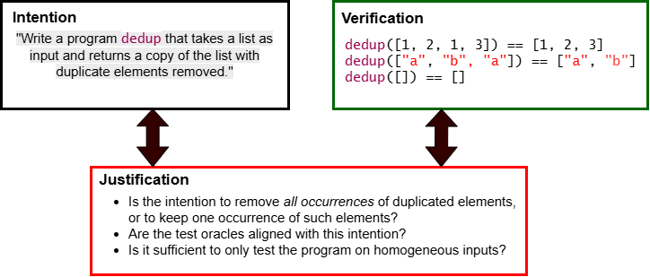

AssureCode: Structured Justification for Trustworthy Agentic Coding
AI agents can generate large volumes of code, but it is hard to establish that this code is aligned with developer intent and has been adequately validated. Justification, meaning the reasons the evidence supports trust, is usually left implicit.
The authors define a language of structured justification rationales inspired by GSN assurance cases. These rationales relate prompts, partial first-order formalizations, assumptions, and program-analysis evidence. AssureCode, implemented as an MCP service, autoformalizes intent into Lean vocabularies and specifications for human approval. It then decomposes claims via Lean templates, with an agent proving decomposition soundness that Lean checks, and links tests to formal claims. The process also generates collateral validation obligations for human review.

AssureCode was evaluated on samples from HumanEval, LiveCodeBench, and MBPP with four LLMs, against an iterative LLM 'vibe justification' baseline. A single AssureCode run produced a comparable number of validation obligations and recovered most of the concerns found by the baseline. It also surfaced additional concerns, with part of its coverage coming from the formalization artifacts.
| Benchmark | Method | gpt-5.6-sol | claude-fable-5.1 | deepseek-v4-pro | gemini-3.1-pro |
|---|---|---|---|---|---|
| HumanEval | Baseline | 7.5 (5–11) | 7.4 (5–9) | 5.8 (3–8) | 5.1 (3–7) |
| HumanEval | AssureCode | 4.4 (3–6) | 8.8 (6–14) | 8.7 (6–11) | 5.8 (4–7) |
| MBPP | Baseline | 5.0 (4–7) | 7.9 (5–11) | 9.4 (7–11) | 5.8 (2–9) |
| MBPP | AssureCode | 5.0 (3–10) | 8.5 (6–11) | 10.2 (7–24) | 6.6 (3–13) |